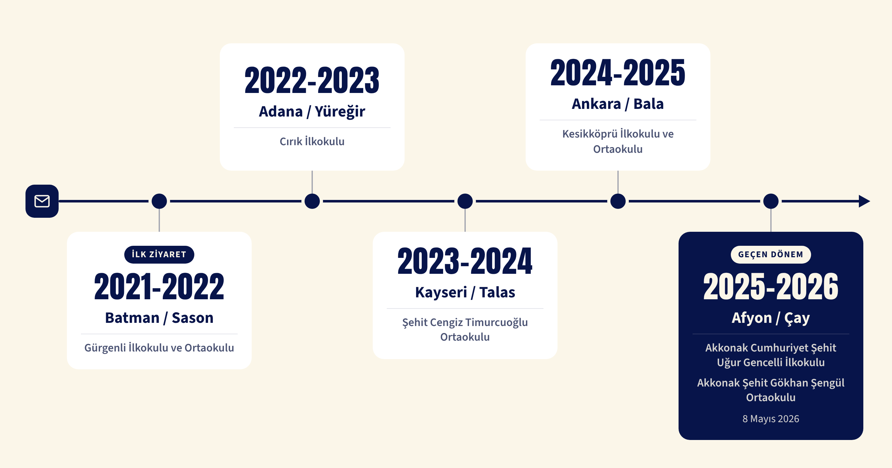

Toplumsal fayda yaratma hedefiyle hayata geçirdiğimiz projelerde, her öğrencimizin yılda en az bir sosyal sorumluluk projesinde aktif görev almasını önemsiyoruz. Eğitimden çevreye, çocuklardan yaşlılara uzanan çalışmalarımızla birlikte üretmeyi, dayanışmayı ve geleceğe değer katmayı amaçlıyoruz.
Önceki Dönem Projelerimiz
Meşaleden Mektup Var (MMV)
2021-...
2021 yılında Batman’da ilk mektuplarla başlayan projemiz, her dönem farklı bir ilde yeni arkadaşlıklar kurarak yolculuğuna devam etti. Adana, Kayseri ve Ankara’nın ardından 2025–2026 döneminde Afyonkarahisar’ın Akkonak köyündeki öğrencilerle bir yıl boyunca mektuplaştık.

Geçen dönenim hikayesi: 8 Mayıs 2026’da gönüllülerimizle Afyonkarahisar’a ziyaret için yola çıktık. TED Afyon Koleji ziyaretimizin ardından Akkonak’taki okullarda, bir dönem boyunca mektuplaştığımız arkadaşlarımızla ilk kez yüz yüze buluştuk. Birlikte oyunlar oynadık, etkinlikler yaptık ve aylarca satırlarda kurduğumuz bağı gerçeğe dönüştürdük. O gün yüzlerdeki tatlı tebessüm, bütün emeğin en güzel karşılığıydı. Çünkü bazen bir çocuğun gülümsemesi, dünyaya bırakabileceğiniz en güzel izdir.


Çocuk Tiyatrosu
2024–2025 · 2025–2026
“Perde bu kez küçük kardeşlerimiz için açılıyor!” diyerek 2024–2025 döneminde hayata geçirdiğimiz Çocuk Tiyatrosu projemizle çocukları tiyatronun renkli dünyasıyla buluşturmak için yola çıktık. İlk durağımız Şehit Harun Aydın İlkokulu oldu. Kendi emeğimizle hazırladığımız “Büyük Mücadele” adlı oyunumuzu sahneledik. Senaryosundan kostümüne, dekorundan makyajına kadar her aşamasında arkadaşlarımızın emeği vardı. Haftalar süren hazırlığın ardından sahneye çıktığımızda, küçük izleyicilerimizin heyecanı ve mutluluğu tüm her şeye değdi.
2025–2026 döneminde ise “Bisiklet Tamircisi” adlı yeni oyunumuz için yeniden kolları sıvadık. Senaryomuzu yazdık, provalarımızı gerçekleştirdik; kostüm, dekor ve görsellerimizi kendi imkânlarımızla hazırladık. Hatta düzenlediğimiz atölyeyle sahne tasarımımızı da tamamladık. Tüm hazırlıklarımızı bitirmemize rağmen oyunumuzu sahneleme fırsatı bulamadık. Ancak tiyatroyla kurduğumuz bağı burada bırakmadık. Edindiğimiz deneyimi bu dönem Doğaçlama Tiyatro projemizle farklı bir biçimde sürdürmeye karar verdik.


Kuşak Çalışması
2025-2026
Farklı kuşakları bir araya getirerek aralarındaki bağı güçlendirmeyi ve birlikte güzel anılar biriktirmeyi amaçlayan Kuşak Çalışması projemiz kapsamında 13 Mayıs 2026’da Dört Mevsim Yaşam Köşkü’nü ziyaret ettik. Sakinlerle uzun uzun sohbet ettik, birlikte ahşap boyadık, çiçekler diktik ve öncesinde düzenlediğimiz atölyede özenle hazırladığımız hediyeleri de onlarla paylaştık. Yaşlarımız ve hayat tecrübelerimiz farklı olsa da aynı mutlulukta buluştuğumuz bu gün, küçük paylaşımların ve içten bir sohbetin insanlar arasında ne kadar güzel bağlar kurabileceğini bir kez daha gösterdi.


Eğitim Destek Mentorluk (EDM)
Üniversite sınavına hazırlanan öğrencilerin bu zorlu yolculuklarında yanlarında olmak amacıyla yürüttüğümüz Eğitim Destek Mentorluk projesi kapsamında 11. sınıf öğrencileriyle her hafta düzenli olarak bir araya geldik. Ders çalışmalarına destek olurken kendi deneyimlerimizi de paylaşarak onlara yalnızca akademik anlamda değil, motivasyon ve rehberlik açısından da katkı sunmaya çalıştık. Bir zamanlar aynı sınav heyecanını yaşamış öğrenciler olarak, tecrübelerimizi paylaşmak ve onların yoluna küçük de olsa bir ışık tutabilmek bizim için bir projeden daha kıymetliydi.